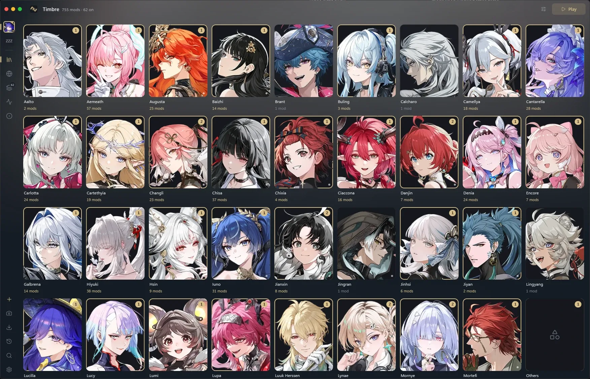
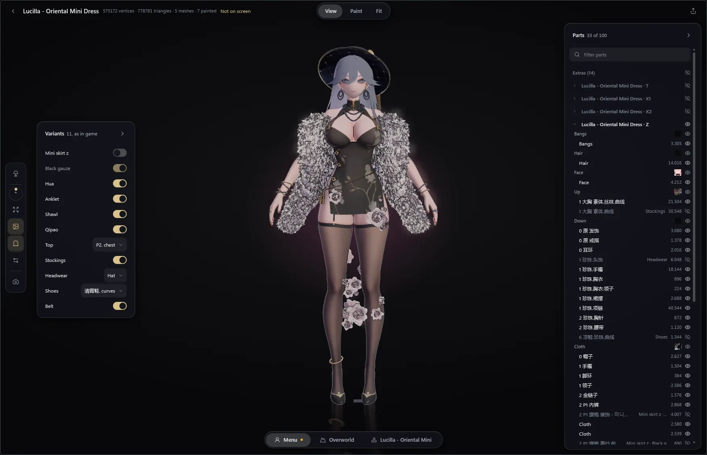

Every mod you own,
on the right character.
Overtone draws them in the game. Timbre sorts, previews and switches them on your desktop.
Download For Wuthering Waves · Free · Windows 10 and 11 · Beta
In the game
Overtone
- Draws your mods on DirectX 12
- Switches from the overlay, or the mod's own keys
- Keeps mods working through updates that leave a model alone
On your desktop
Timbre
- Sorts your mods by character
- Shows each outfit on its character before you play
- Installs Overtone and keeps it up to date
See an outfit on its character before you play.
Turn the character around, flip switches and hide pieces in Timbre's model view.
